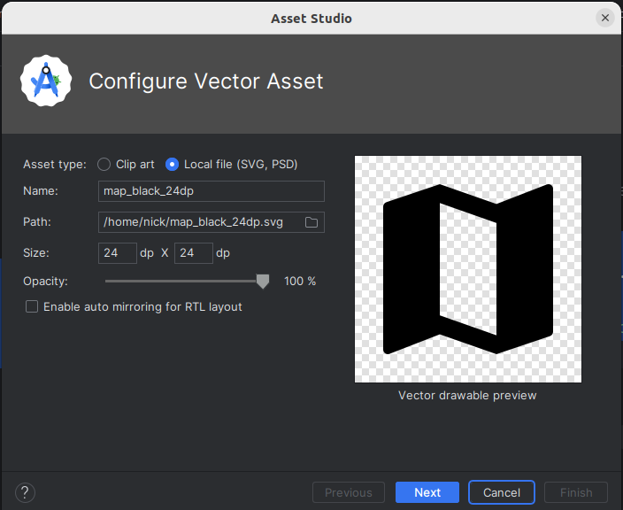
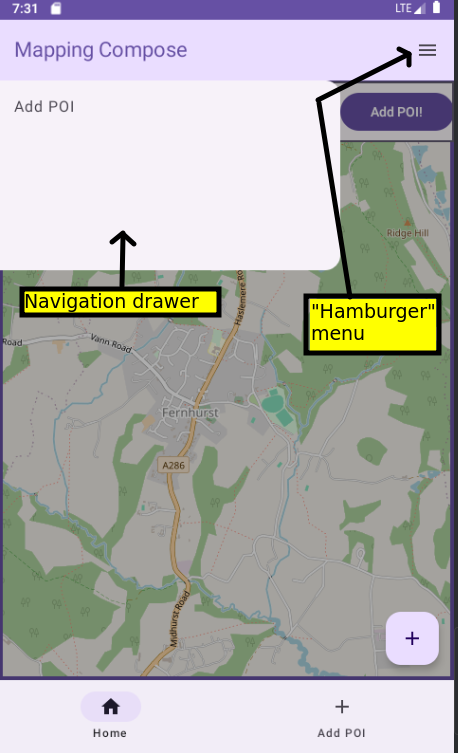

This week will look at common UI elements for navigation including the TopAppBar, bottom navigation bar, floating action button and navigation drawer.
Last week we looked at navigation, and saw how we could represent multiple screens of an app with multiple composables and use NavController and NavHost to implement navigation. This week, we will look at how we can implement typical UIs designed for navigation, rather than just buttons.
Navigation components (all available as composables in Jetpack Compose) incude:
ModalNavigationDrawer) is a pull-out menu which appears, typically, on the left of the screen in response to the user clicking a "hamburger" icon.See here for Android documentation on app bars (top and bottom).
Important: to use the top app bar using Material Design 3 you need to opt in to the experimental Material Design 3 API for the top app bar. Add this immediately before your onCreate():
@OptIn(ExperimentalMaterial3Api::class)
To implement the top app bar (and the bottom navigation bar and floating action button), we use the appropriate composable within a Scaffold. What is a Scaffold? It's a top-level component which allows us to "plug in" common application components such as a top app bar, a bottom navigation bar, or a floating action button. The form of code we use with Scaffold is:
Scaffold(
topBar = { },
bottomBar = { },
floatingActionButton = { }
) { your main content }
So with a Scaffold you define composables for navigation components as arguments, and then as the final argument you define your main content.
See the Android documentation for more on Scaffold.
To actually implement a top app bar you use the TopAppBar composable. You define its colours (colors) and actions as well as a title. The colours consist of the containerColor (the background) and the titleContentColor (the text). The actions are tasks that are launched by a user clicking an icon on the app bar (e.g. launching a menu). Here is an example:
Scaffold(
topBar = {
TopAppBar(colors = TopAppBarDefaults.topAppBarColors(
containerColor = MaterialTheme.colorScheme.primaryContainer,
titleContentColor = MaterialTheme.colorScheme.primary
), actions = {
IconButton(onClick = {
// TODO (see below) - show the menu when the icon is clicked
}) {
Icon(imageVector = Icons.Filled.Menu, "Menu")
}
}, title = { Text("Top Bar Example") })
}) { innerPadding ->
// main content is placed here
}
Note how we define the two colours using the primaryContainer and primary colours from the material theme: this is recommended in the documentation. The actions contains one or more icons to appear on the top app bar. Each action is defined with an IconButton: a composable which represents a clickable icon.
In our case, we just have one IconButton for the menu icon. The title of the top app bar is also defined.
IconButton takes, as arguments:
onClick event handler. We will fill this in later when we look at the navigation drawer.Icon.
The Icon represents the actual icon which is displayed. Icon (and IconButton) is a composable. Material Design comes with a series of standard icons, which are recommended to be used where possible as they have been specifically designed to blend well into Material Design UIs. Here, we are using the standard Menu icon from Material Design, representing a "hamburger" menu.
There are a range of standard Material Design icons you can use within the androidx.compose.material.icons.Icons object; see the API documentation, which shows the icons that are available.
If you wish to use an icon which is not available in the Icons object, you can download it from the web; there is a much larger set available from fonts.google.com. They are available in Scalable Vector Graphics (SVG) format. SVG is a vector image format, in other words shapes are defined by a series of vectors (lines from one point to another) which means that they scale easily compared to pixel-based (raster) icons.
To use a custom icon, you should download it and then import it into your app's resources. To do this right-click the res folder and then select New-Vector Asset. The dialog below will appear:

Then follow the steps and the imported vector image will appear in your drawable folder. You can then access it via R.drawable.imagename.
Here is an example of using a custom Icon:
Icon(
painter = painterResource(R.drawable.map_black_24dp),
contentDescription = "Map",
tint = MaterialTheme.colorScheme.primary
)
Note how we supply a painter argument to load the image from the resources. By default the images will be black or white, however we can tint them to use a colour from our Material colour scheme, as is shown in the code above.
See the API documentation for more on icons.
The main content associated with a Scaffold is defined via a lambda function passed in as the final argument to the Scaffold. As can be seen above this takes one parameter: innerPadding. This is the adjustment you must apply to the rest of the layout to account for the top app bar: note that you have to "push down" the main content below the top app bar otherwise the app bar will hide the content. You do this by applying padding: the innerPadding, of data type PaddingValues, is the correct padding which must be applied, which is calculated from the height of the app bar. This is passed into a composable as a modifier, e.g:
Scaffold({
// ...
}) { innerPadding -> {
MyComposable(modifier = Modifier.padding(innerPadding)) { /* ... */ }
}
The innerPadding also contains adjustments for a bottom app bar.
We will now return to the floating action button (FloatingActionButton composable) and bottom navigation bar (NavigationBar composable). The FloatingActionButton is a single button which appears typically at the bottom right of your screen and represents a primary action that a user would like to carry out (such as writing an email in an email application). The NavigationBar, otherwise known as the bottom navigation bar, takes the form of a series of labelled icons along the bottom of the screen allowing a user to switch between screens. The bottom navigation bar should not pop the back stack but instead navigate to a new instance of the given component.
We define each of these in our Scaffold with the floatingActionButton and bottomBar properties.
Here is an example of a FloatingActionButton within an app's Scaffold:
Scaffold(
floatingActionButton = {
FloatingActionButton(
onClick = { navController.navigate("addStudent") },
content = {
Icon(imageVector = Icons.Filled.Add, contentDescription = "Add Student")
}
)
}
) { innerPadding -> ... }
Hopefully the floating action button code is easy to understand: it has an onClick argument in which we specify an event handler, and a content argument in which we specify the icon. (Icons.Filled.Add is the standard Material Design icon to use when adding something, e.g. a student in this case).
Here is an example of a bottom navigation bar (NavigationBar):
Scaffold(
bottomBar = {
NavigationBar {
NavigationBarItem(icon = { Icon(Icons.Filled.Home, "Home") },
label = { Text("Home") },
onClick = { navController.navigate("home") },
selected = true)
NavigationBarItem(icon = { Icon(Icons.Filled.Add, "Add Student") },
label = { Text("Add POI") },
onClick = { navController.navigate("addStudent") },
selected = false)
}
}
) { innerPadding -> ... }
Again it shouldn't be too hard to understand. We specify a NavigationBar composable with two NavigationBarItems, one for each navigation destination. One is for the home screen and the other is for the "add student" screen. Each NavigationBarItem has:
icon;label (the text on the navigation item);onClick event handler;selected boolean representing whether this option is selected by default.With Jetpack Compose we can easily set up buttons with both icons and text, e.g.
The key to understanding this is that the final argument to Button, a lambda, can contain more than one child composable, arranged in a row. Normally there is just a Text composable, however you can add an Icon as well, e.g:
Button(onClick= { /* event handler */} ) {
Icon(Icons.Filled.Add, "Add student")
Text("Add Student")
}
See the Android documentation for more details.
Having looked at the TopAppBar and Scaffold, we can now look at the navigation drawer itself (ModalNavigationDrawer). An example is shown below, also showing the "hamburger" menu on the top bar which typically shows it when clicked.

The navigation drawer consists of a drawer sheet (ModalDrawerSheet) containing the actual menu items, known as navigation drawer items (NavigationDrawerItems). We specify the drawer sheet through the drawerContent argument. The final argument of ModalNavigationDrawer is a lambda containing the content that the navigation drawer allows you to navigate between; this is likely to be your NavHost.
ModalNavigationDrawer(drawerState = drawerState,
drawerContent = {
ModalDrawerSheet(){
NavigationDrawerItem(
selected = false,
label = { Text("Add Student") },
onClick = {
// TODO: Close the drawer when clicked - see below
// Navigate
navController.navigate("addStudent")
}
)
}
}
) {
// Place your NavHost here...
}
Hopefully this is fairly clear. We create a ModalNavigationDrawer and supply the drawer state (i.e. is the drawer showing (open) or hidden (closed)?; we will look at this below) and the drawer content. The drawer content consists of a ModalDrawerSheet. Inside the ModalDrawerSheet we define one or more NavigationDrawerItems (menu items). Each NavigationDrawerItem has a series of arguments:
selected - is the item selected by default?label - the text on the navigation drawer item;onClick - an event handler which runs when the user clicks the menu item.What we have not seen yet is how to manage drawer state, in other words control whether it's currently showing (open) or hidden (closed). We do this by setting up a variable of type DrawerState using the inbuilt function rememberDrawerState().
val drawerState = rememberDrawerState(initialValue = DrawerValue.Closed)This sets the drawer state up to be closed by default.
We then add code to the hamburger menu item in our TopAppBar to either open or close the navigation drawer depending on the drawer state. To return to the IconButton implementation in our top app bar, we can now fill in the onClick event handler:
IconButton(onClick = {
coroutineScope.launch {
if(drawerState.isClosed) {
drawerState.open()
} else {
drawerState.close()
}
}
}) {
Icon(imageVector = Icons.Filled.Menu, "Menu")
}
Hopefully you can see that the logic is either opening or closing the drawer depending on whether it's currently closed or open. So each time the menu icon is clicked, the visibility of the drawer will flip. We will discuss the meaning of coroutineScope.launch below.
The other code we need to implement is code to close the drawer when the user clicks an item in the navigation drawer. To return to the code to do this:
ModalNavigationDrawer(drawerState = drawerState,
drawerContent = {
ModalDrawerSheet(){
NavigationDrawerItem(
selected = false,
label = { Text("Add Student") },
onClick = {
coroutineScope.launch {
drawerState.close()
}
// Navigate
navController.navigate("addStudent")
}
)
}
}
) {
// Place your NavHost here...
}
Note how we've added code to close the navigation drawer when the user selects an item.
You're probably wondering what the coroutineScope means. The process of opening and closing a navigation drawer is potentially a time-consuming process which could potentially cause the UI to become unresponsive, thus it's done as a background process.
Previously the way to implement background processes was with threads. A thread is a separate strand of execution which permits tasks to run simultaneously. Typically you would have a main thread which manages the GUI, and additional threads to manage background tasks such as network communication.
However Kotlin allows you to achieve the same effect with coroutines. A coroutine is a function that can run in either the foreground or the background, and can be suspended (paused) to allow another operation to take place. Under the hood, coroutines often use threads, but the code complexity is less if you use a coroutine compared to a raw thread.
In the database topic we will look at coroutines in a little more detail, but for now you just need to be aware that when we change the state of a navigation drawer, we need to do it in a separate coroutine so it does not cause the UI to become unresponsive.
So in our case, coroutineScope.launch allows you to launch a coroutine, specified as a lambda function here, and in that coroutine you either open or close the navigation drawer. To initialise the coroutineScope variable which is used to launch the coroutines, you use a remember-based initialisation.
val coroutineScope = rememberCoroutineScope()
We will take a deeper look at coroutines in a future session.
Will appear later.